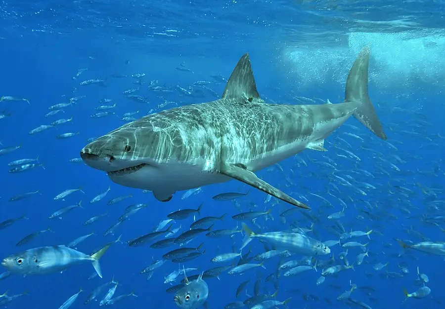
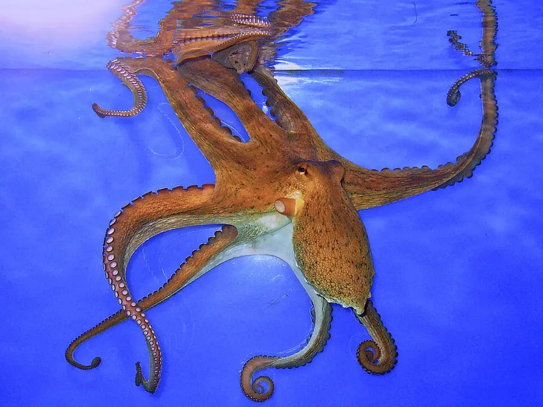

Kingdom Animalia · Step 1
The Animal Kingdom: backbone or not?
This lesson introduces you to Kingdom Animalia as its own major branch of life. Learn what animals are, what traits they share, and how scientists group them into major categories.
Big idea: Animals are living things that eat other organisms, respond to their environment, and come in many forms, from sponges and insects to fish, birds, reptiles, and mammals.


Both swim, both hunt in the sea. Only one has a backbone.
Learning goals
What you’ll learn
- Define the animal kingdom and identify core characteristics shared by animals.
- Explain the difference between vertebrates and invertebrates.
- Recognize major animal groups and their basic traits.
- Describe how animals survive through body structures and behaviors.
- Practice sorting animals into useful classification categories.
Core content
What makes an animal an animal?
Multicellular
Animals are made of many cells, not just one.
Consumers
Animals cannot make their own food like plants. They must eat other organisms.
Responsive
Animals react to their surroundings using senses, nerves, or other body systems.
Movement
Most animals move during at least one part of their life cycle.
Major categories
Two useful backbone groups
Invertebrates
Do not have a backbone. This includes insects, spiders, jellyfish, worms, snails, octopuses, and many more. The great majority of described animal species are invertebrates.
Vertebrates
Do have a backbone. These include fish, amphibians, reptiles, birds, and mammals. This backbone protects their spinal cord.
Main vertebrate groups
Fish
Live in water, breathe with gills, scales and fins.
Amphibians
Begin life in water, live partly on land. Frogs are classic examples.
Reptiles
Dry, scaly skin. Lay eggs on land. Snakes and turtles.
Birds
Have feathers, beaks. Lay eggs. Masters of flight.
Mammals
Hair or fur. Feed milk to young. Humans, whales, bats.
Survival
How animals survive
Animals survive through adaptations: features or behaviors that help them stay alive. Some are physical, some are behavioral.
Body structures
Claws, wings, camouflage, shells, sharp teeth, fins, thick fur.
Behaviors
Migration, hibernation, hunting in packs, building nests, hiding.
Habitats
Deserts, forests, oceans, rivers, grasslands, tundra, and more.
Interactive · Predict → test → explain
Sort the animals by backbone evidence
Before sorting, predict whether a whale, snake, and octopus have backbones. Explain your evidence to a partner. After sorting, revise one prediction. Vertebrate and invertebrate are useful groups, not two phyla. Habitat does not determine ancestry.
How to play
- Select an animal, then select Vertebrates or Invertebrates. You can also drag a card into a group.
- A green highlight means correct. A card that bounces back needs another look.
- Sort all 20 animals, then explain the trait you used.
- Press Reset game to try again any time.
Did you know: vertebrates
All vertebrates share a key feature: a backbone (spine) that protects their spinal cord. This includes fish, amphibians, reptiles, birds, and mammals.
Did you know: invertebrates
The great majority of described animal species are invertebrates. They lack a backbone but have evolved incredible body plans, from octopuses to beetles to jellyfish.
Vocabulary
Key terms
- Animal kingdom
- The kingdom of living things that includes all animals.
- Vertebrate
- An animal with a backbone.
- Invertebrate
- An animal without a backbone.
- Habitat
- The natural home or environment of an organism.
- Adaptation
- A trait or behavior that helps an organism survive.
- Classification
- The grouping of living things based on shared traits.
Discussion
Questions for reflection
- What traits do most animals share?
- What is the difference between a vertebrate and an invertebrate?
- Why is a spider not a vertebrate?
- How do body parts help animals survive?
- Why do scientists classify animals into groups?
Assessment
Exit ticket
Before you leave, answer these three questions to check your understanding:
- Name one trait shared by most animals.
- Write one example of a vertebrate and one example of an invertebrate.
- Describe one adaptation that helps an animal survive.